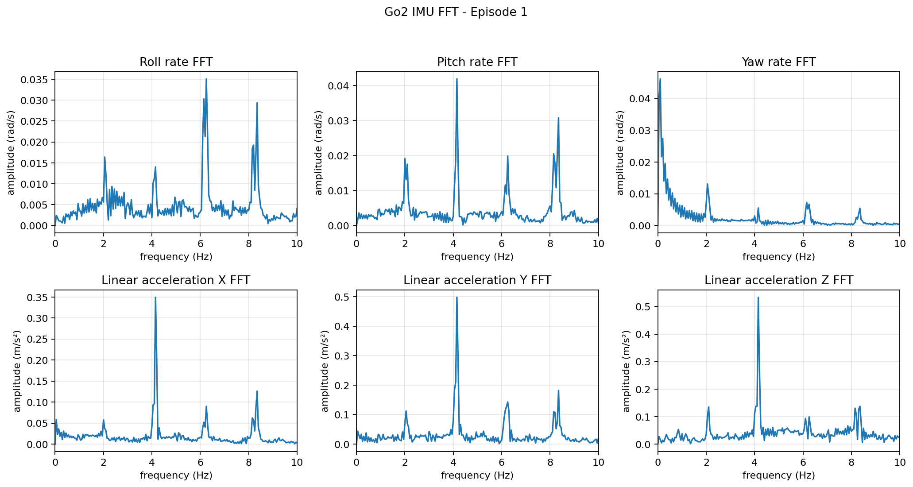

이 프로젝트는 Unitree Go2 로봇의 locomotion 강화학습 환경을 Isaac Lab에서 구성한 코드입니다. 기존 Go2 환경에 IMU 센서를 추가하고, 정책이 학습·재생되는 동안 로봇의 흔들림과 기울어짐을 더 직접적으로 확인할 수 있도록 관측값, 보상항, 에피소드별 FFT 그래프 저장 흐름을 정리했습니다.
- 작업 시기 2026년 8월 ~ 9월
- 내 작업 파트 Go2 IMU 센서 부착, IMU 기반 관측·보상 설정, 정책 재생 중 IMU 수집과 에피소드별 FFT 그래프 저장 기능 구성
- 주요 기술 Python, Isaac Lab, RSL-RL, Unitree Go2, IMU, Matplotlib
구현 방식
UnitreeGo2RoughEnvCfg에ImuCfg를 추가해 Go2 base 링크 기준 IMU 센서를 부착했습니다.- 정책 관측 순서를 gyro, projected gravity, linear acceleration, command, joint state, previous action 순서로 정리해 실제 Go2 policy runner와 맞추도록 구성했습니다.
imu_ang_vel_xy_l2,imu_orientation_l2,imu_lin_acc_l2보상항으로 roll/pitch 흔들림과 과도한 가속을 penalty로 반영했습니다.- flat/rough 환경을 나누고, play 전용 설정에서는 환경 수와 randomization을 줄여 정책 확인이 쉽도록 구성했습니다.
scripts/rsl_rl/play.py의ImuEpisodeFftPlotter가 첫 번째 환경의 각속도와 선형가속도를 제어 시점마다 모으고, 에피소드가 끝날 때 6패널 FFT PNG를 자동 저장하도록 구성했습니다.
FFT 그래프와 1차 흔들림 검증

가장 일관된 피크는 약 4.1Hz에서 나타났습니다. 이 주파수에서 pitch rate는 약 0.042rad/s, 선형가속도 X·Y·Z는 각각 약 0.35, 0.50, 0.53m/s²까지 올라갑니다. 회전과 세 방향 가속도가 같은 주파수에서 함께 커지므로, 센서 한 축의 잡음보다는 보행 중 몸체 전체가 반복적으로 반응한 성분으로 볼 수 있습니다.
약 2.1Hz, 4.1Hz, 6.2Hz, 8.3Hz에 피크가 반복되는 점은 기본 보행 또는 발 접촉 리듬과 배음의 영향일 가능성을 보여 줍니다. 다만 이번 기록에는 발 접촉 시각과 관절 위상이 함께 저장되지 않았기 때문에 각 피크가 한 걸음, 대각선 발쌍의 교대, 지면 충격 중 무엇과 대응하는지는 아직 확정할 수 없습니다.
- 앞뒤 흔들림: pitch rate가 4.1Hz에서 가장 커 발을 디딜 때 몸체가 반복적으로 끄덕이는 움직임이 나타난 것으로 보입니다.
- 좌우 흔들림: Y축 가속도 피크가 X축보다 커 횡방향 휘청임을 우선 점검할 필요가 있습니다.
- 상하 바운스: Z축 가속도가 약 0.53m/s²로 여섯 축 중 가장 큰 반복 성분을 보입니다.
- 방향 변화: yaw rate는 0Hz에 가까운 저주파 성분이 약 0.046rad/s로 커 빠른 떨림보다 느린 방향 변화나 편향 가능성을 먼저 확인해야 합니다.
1차 판정은 “주기적인 휘청임은 뚜렷하지만 폭주형 진동의 증거는 없다”입니다. 4.1Hz에 집중된 반복 진동은 보이지만, 0~10Hz 전 구간에 넓게 퍼지는 고주파 에너지나 연속적으로 커지는 피크는 관찰되지 않았습니다. 따라서 이 한 장만 놓고 보면 제어가 발산하는 형태보다는 일정한 보행 리듬에 묶인 전후·좌우 흔들림과 상하 바운스에 가깝습니다.
현재 분석의 한계
현재 구현은 각 축의 평균을 뺀 뒤 abs(rfft) / N을 그리며, 창 함수와 실수 신호의 한쪽 스펙트럼 보정을 적용하지 않습니다. 그래프의 FFT 크기를 실제 자세각이나 몸체 변위의 최대값으로 바로 환산할 수 없는 이유입니다. 또한 한 환경의 첫 번째 에피소드만 본 결과라서 정책의 안정성이나 낙상 가능성을 확정하지 않았습니다.
다음 검증에서는 여러 에피소드의 roll·pitch 자세각 peak-to-peak와 RMS, 중력을 제거한 가속도 RMS, 명령 속도 추종 오차, 네 발의 접촉 시각을 함께 저장할 예정입니다. 이 값이 모이면 주기적인 보행 동작과 자세를 잃는 휘청임을 분리해 비교할 수 있습니다.
공개 저장소 정리
공개 저장소에는 소스 코드와 설정 파일만 남겼고, 학습 로그, TensorBoard 이벤트, 모델 체크포인트, ONNX/PT 정책 파일, logs/, outputs/, 캐시 파일은 제외했습니다.